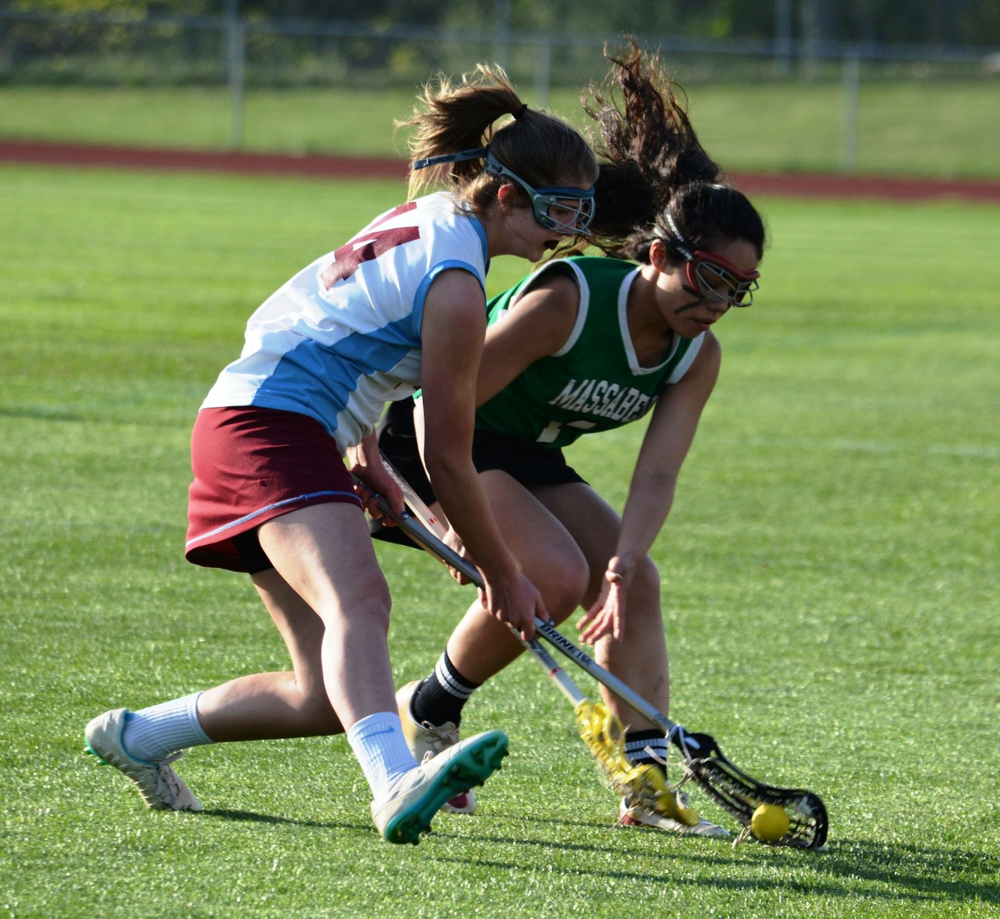
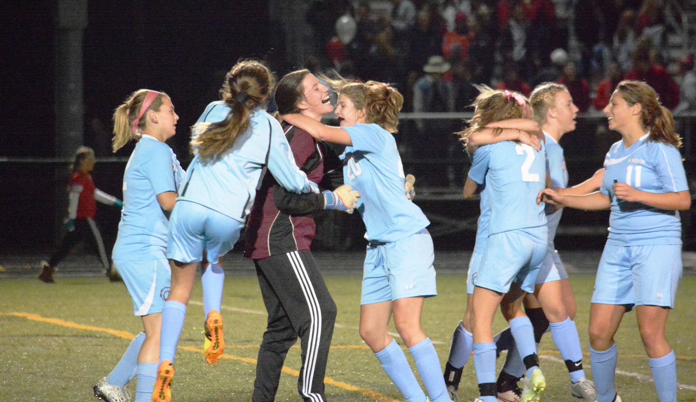
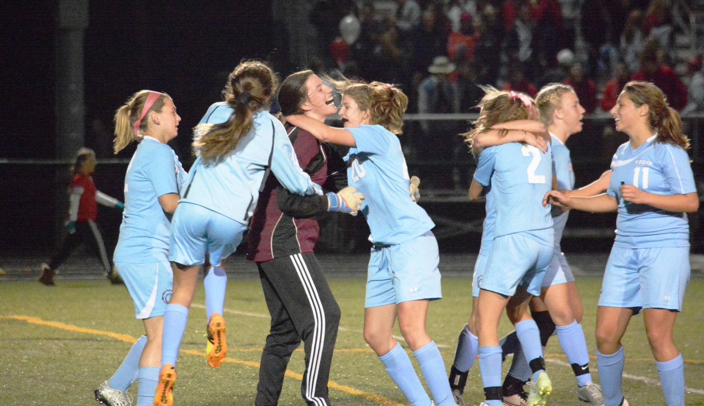

- I was born November 6th, 1998, in Portland ME. I have always lived in Maine. Up until first grade I attended Raymond Elementary. Then I moved to Windham and finished my education there.
- I finished high school with a 3.8 GPA which I am very proud of.
- I played Soccer, Basketball, and Lacrosse all four years of high school.
 

I am the middle child as well as the only girl in my family. I have one older brother (Brendan,) a younger brother (Cameron,) and a step brother (Matthew,) who is one year younger than me.
- Favorite movie: Bridesmaids
- Favorite color: Light blue
- Favorite food: Chicken parmesan, pasta, and pizza
- Favorite sport to play: Lacrosse
- Favorite sport to watch: Football and Soccer
- Favorite TV show: Grey's Anatomy and Americas Got Talent
- Favorite Music: Country